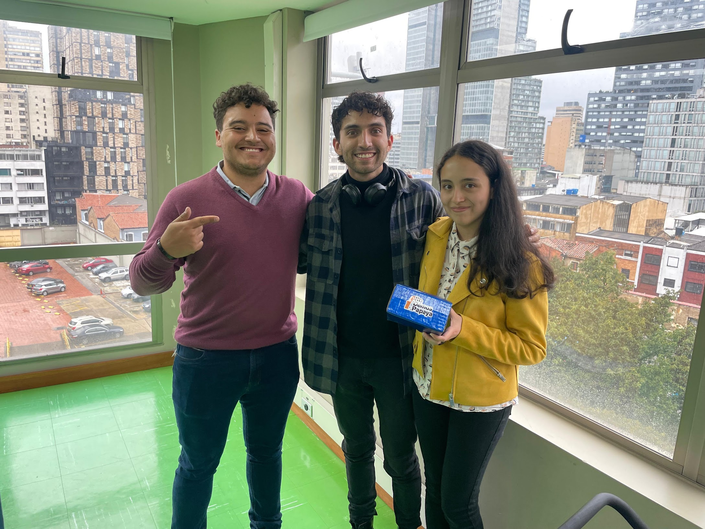
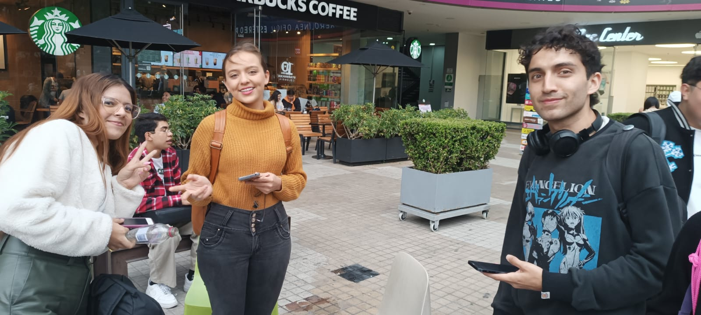
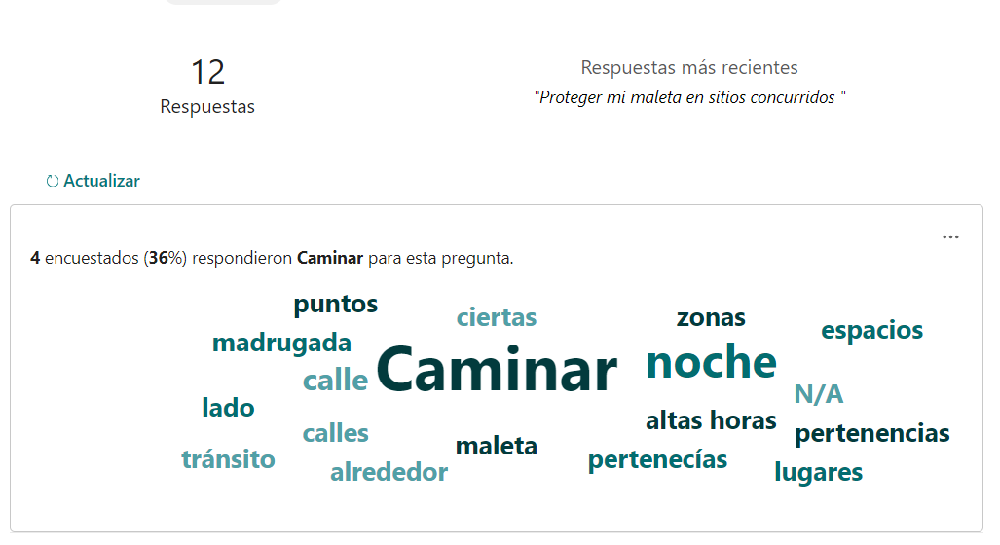
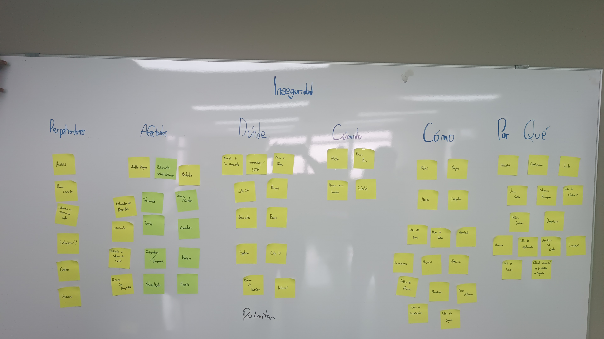
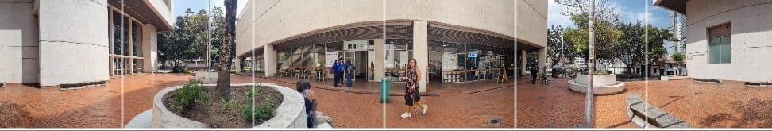

Experiencia inmersiva 360° en Google Cardboard para concientizar sobre seguridad en el centro de Bogotá — de la problemática al MVP en 3 días, hackathon universitario.

Los estudiantes universitarios que transitan a diario el centro de Bogotá conviven con altos índices de inseguridad, pero las campañas de prevención existentes apelan al miedo y la evasión. ¿Cómo comunicar información real de protección sin generar más ansiedad?
Día 1 completo dedicado a research en calle: entrevistas 1 a 1 y una encuesta corta con estudiantes y transeúntes del centro de Bogotá, seguidas de un mapa de afinidad para encontrar patrones en los hallazgos.

Research día 1 — entrevistas 1 a 1 en calle.

Encuesta corta (Google Forms) — palabras más repetidas: caminar, noche, maleta, pertenencias.

Mapa de afinidad completo del research día 1.
Los estudiantes universitarios se sienten inseguros en las estaciones de TransMilenio en horas pico por el cosquilleo.
— Insight del mapa de afinidad, research día 1El insight que definió el proyecto: "evitar" resultó un verbo demasiado negativo para el problema. El equipo pivotó de un mensaje de miedo/evasión hacia concientizar e informar — dar herramientas de prevención, no una advertencia.
Experiencia inmersiva 360° construida con Google Cardboard: fotografías panorámicas reales de zonas del centro de Bogotá, recorridas como un trayecto gamificado con acertijos que entrega consejos concretos de prevención en el camino.

Una de las fotografías 360° reales que componen el recorrido.
Roles del equipo: diseño gráfico (piezas visuales, panorámicas 360°), interactivo (construcción física de la Cardboard, fortalecimiento de conceptos), y yo como lead — definición del MVP, propuesta de gamificar la experiencia y dirección de cómo presentarla al jurado.
2º puesto en el hackathon organizado por CUCB en alianza con TadeoLab, con puntaje de innovación perfecto según el jurado. De la problemática al MVP funcional en 3 días.